The Fire Necromancer's volcanic pterosaur, round 3 (October 27, 2026): the user's pick of round 2 (B, the half-moon crest) at 33 blocks across its wings, slimmer, its half moon all along its bill, rebuilt wings, less lava on its scales; its young (22.5 across) with more lava; the egg with a thinner shell round its young curled up inside, in three strengths of magma and cut open. In the game the adult and the young move: their animations are in animations/. Its volcano is built in the game by the showcase, behind the gallery. Rounds 1 and 2 are in round1/ and round2/. E1B, E1C and E1D (October 31): the adult (E1A) with less and less lava on its body and horns, its wings the same, for the user to compare (side by side in lava_looks/). E1C1-E1C4 (November 2): E1C, the user's pick of those, with its bill and jaw, half moon, horns and tail purple in four ways (side by side in purple_looks/). In the game: /dross showcase boss_designs emberdactyl.
originals.png · lineup.png · all_designs_1.png
Their animations (every move as a GIF, made by tools/fire/mobs.py)
E1A to E1D side by side: the adult with less and less lava on its body and horns, its wings the same (close-ups of its head and body, by day and at night; drawn by tools/fire/lava_looks.py).
E1C and E1C1 to E1C4 side by side: E1C with its bill and jaw, half moon, horns and tail purple in four ways (close-ups of its head and tail, by day and at night; drawn by tools/fire/lava_looks.py).
Drawn by tools/fire/volcano_preview.py from the blocks the game placed (flat colours: the shapes and the lava, not the textures).


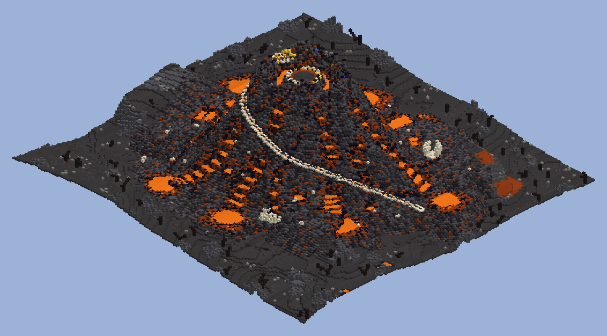
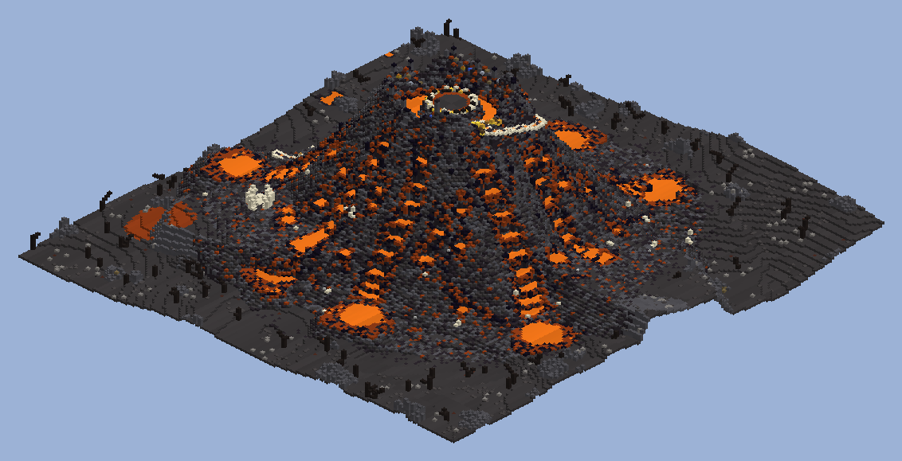
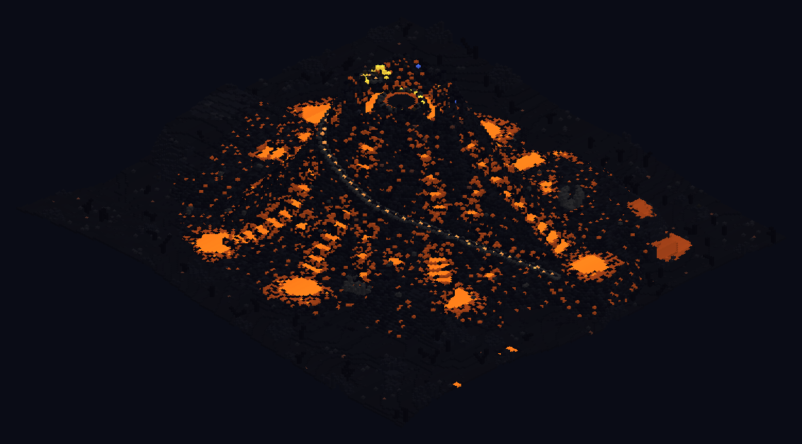
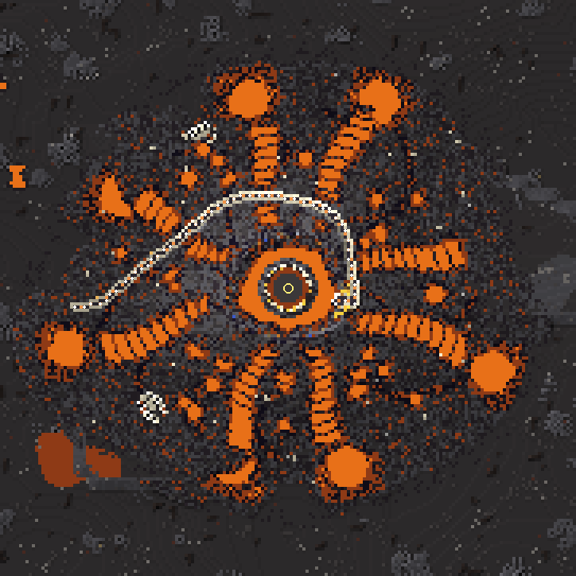
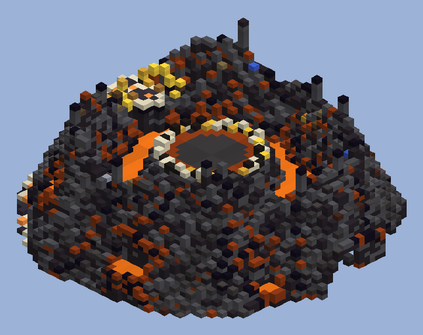
The Fire Necromancer's volcanic pterosaur, round 3 (the user's look in-game, October 27, 2026): round 2's B, "I like the 2nd design", at 33 blocks across its wings ("a wingspan of 33 best fits"): its half moon standing on its bill all along it, its two blade horns, a slender body (no "bear belly"), rebuilt wings (a thin scalloped membrane with ribs across it, thorns swept back along the forearm, a hooked thumb claw) and less lava on its scales. It nests on its volcano guarding its egg, fights mostly in the air and lands for melee (300 health); beaten, its young bursts out of the egg (150).
A: round 2's B as the user picked it, with their notes of October 27 built in (the one in the game).

B: A with half the lava spots on its body, neck, head, legs, tail, horns and half moon; its half moon's rim still bright; its wings as A's.

C: A with a quarter of the lava spots on its body and horns, its half moon's rim half cooled over; its wings as A's.
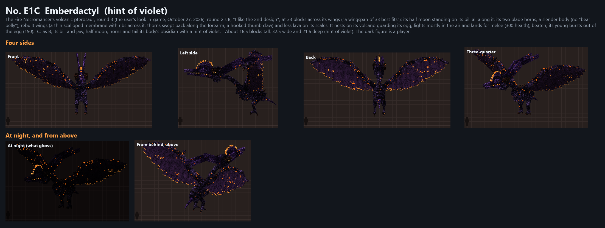
D: a body of dark obsidian, only a few glowing cracks left on it and its horns, its half moon's rim cooled to a glint; its wings as A's.
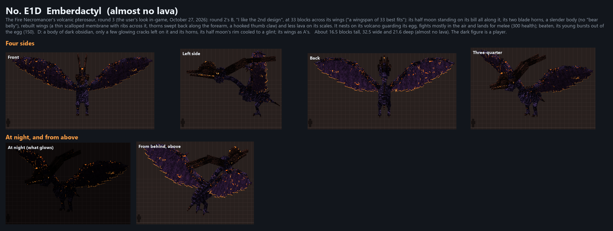
C1: C with its bill and jaw, half moon, horns and tail glossy violet obsidian (like its egg, A11's violet), no lava on them; the rest of it as C.
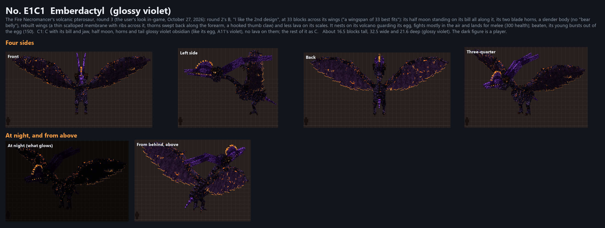
C2: C with its bill and jaw, half moon, horns and tail deep purple at their tips, fading to C's near-black obsidian at their roots (C's few lava veins kept); the rest of it as C.
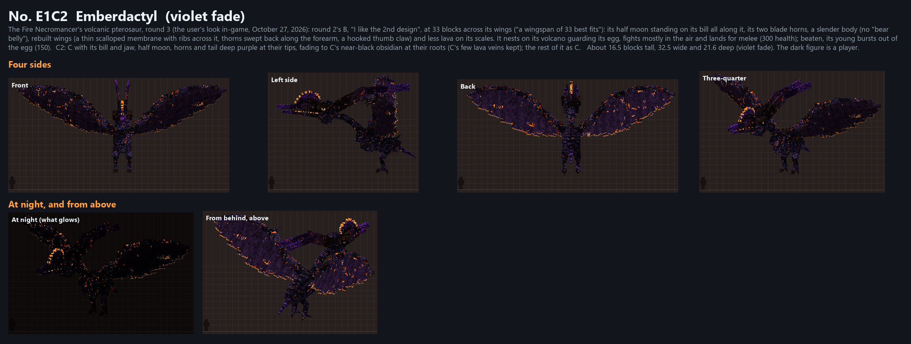
C3: C with its bill and jaw, half moon, horns and tail violet obsidian with lava veins glowing through them (as many as A has there); the rest of it as C.
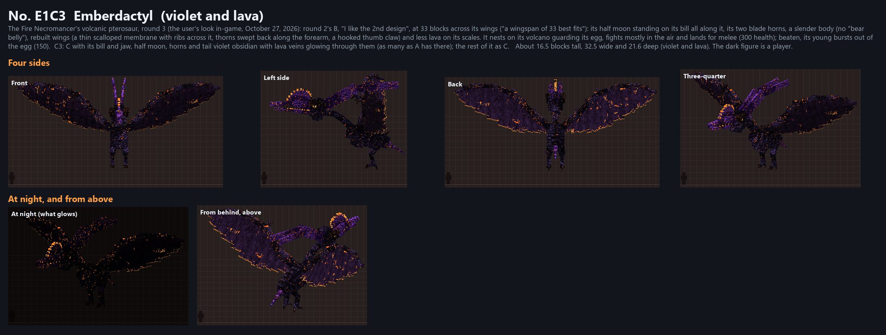
C4: C with only the ends purple: the last third of each horn, the front of its bill and jaw, the top of its half moon under the rim, its tail's end and spike, glowing faintly purple with crying obsidian's sparks; the rest of it as C.

The Emberdactyl's young reborn form, the one that bursts out of the egg when you beat the adult: round 2's size ("the current baby sizes also work", about 22 blocks across its wings), the adult's look, sleeker, its head bigger, "a little more lava" on it: its hide, horns and wings veined with glowing lava. Weaker (150 health), but in its fight it hits as hard as the adult and never lets up.
A: the adult's look, young: sleeker, hotter, more lava on it.

The egg the Emberdactyl guards in its nest on its volcano; nothing breaks it, and when the adult falls its young bursts out. Round 3 (the user: "shrink the egg shell amount"): a thin shell held tight round its young curled up inside (wings folded round it, its head tucked, its tail coiled, its horns still soft), about 13 blocks tall and 10.4 wide. Then (the user's second look): "less magma: not traces of magma on it but mostly obsidian, a gradient, and the inside is all magma and lava": glassy obsidian graded from near black at its foot to violet at its top (A), its foot warmed by the heat inside (B), a few faint hairline cracks (C); D cut open, molten inside.
A: all obsidian, no magma on it: near black at its foot, lighter and more violet up to its top.

B: A's obsidian, its foot warmed by the heat inside: a dim red glow fading up its lower part.

C: A's obsidian with a few hairline cracks glowing faintly, the heat showing through.

D: B cut open: inside it all magma and lava (its inner wall molten, a pool of lava in its bottom), its young curled up in it; shards of shell on the cinders.

E: hatched (the game's egg once its young has burst out; the user's first fight: "the youngest is still in the egg when he broke out"): B broken apart (their second fight: "its remains should remain"): a low jagged bowl full of lava, big pieces of its shell and its top lying round it, some glowing inside up, and shards.
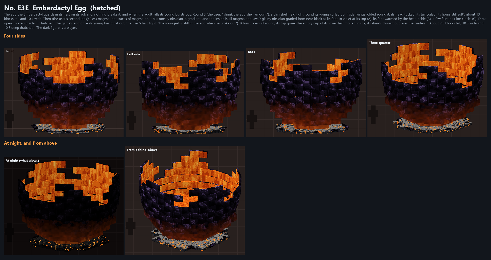